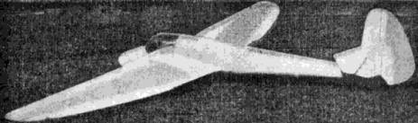

Manual del Vuelo a Vela
Wolf Hirth
1942
La enseñanza del piloto de concurso
por
WOLF HIRTH
La
formación del piloto de velero empieza al obtener el título C, pues todo lo que había
hecho antes era aprender a planear. Los « cursos de entrenamiento » organizados en las
escuelas de vuelo a vela son seguidos por individuos que tienen el título C oficialmente
reconocido. Solamente una parte de cada grupo así formado consigue, en un curso, el «
distintivo superior »; la mayor parte necesitan dos, y muchos, hasta tres cursos de dos
a tres semanas de duración.
Como nunca se puede decir que las condiciones respecto al
vuelo a vela son « normales », ya que están sumamente influidas por el terreno y demás
circunstancias locales, me limito a exponer cómo he procedido en Hornberg y los
resultados que con ello he conseguido.
El profesor de vuelo reúne, para dar un curso, una «
sociedad muy heterogénea » y debe tener por norma no prestar mucho crédito ni a los
cuentos de los alumnos ni a su libro de vuelos. El mejor medio para informarse, que sería
pedir antecedentes a los anteriores profesores que hubiesen tenido los alumnos, no puede
emplearse casi nunca a causa de lo que este medio lleva consigo; hay que escribir, falta
el tiempo, etc.; por tanto, exceptuando aquellos alumnos que ya sean conocidos del
profesor por otros cursos, se hará que todos los demás hagan dos o tres vuelos de
prueba, en un aparato de escuela, con remolque por automóvil o torno. Al hacer esto, se
ve muchas veces que individuos con el titulo C necesitan diez vuelos con torno de
sesenta a cien segundos de duración antes de poder ponerlos a volar a vela en ladera o en
remolque por avión. Si se presenta oportunamente el viento que produce ascendencia,
entonces se pone la gente a volar; no
hay más que sacar de los hangares los aparatos y así no es raro ver en la ladera del
oeste de Hornberg diez o doce aparatos a la vez en el aire.
Los buenos pilotos en seguida « se hacen » sus cinco
horas de vuelo, en las que, como ejercicio preliminar para el vuelo térmico, no sólo han
practicado la virada completa, sino los círculos enteros. Otros menos seguros vuelan
media o una hora, aterrizan y van a contar sus impresiones al profesor. Naturalmente que
para « volar mucho » la primera condición es disponer de un buen parque de aparatos. En
Hornberg se dispone de veinticinco veleros, de los cuales están siempre en vuelo de doce
a quince. El tiempo total de vuelo que, por término medio, consiguen los alumnos en un
curso de cuatro semanas es de ocho a doce horas, y los pilotos seguros no es raro que
lleguen, en ese corto plazo, a las veinte o veinticuatro.
Cuando no hay el viento favorable sobre la ladera, se
aprovecha el tiempo para la enseñanza en vuelo remolcado. Los primeros remolques se hacen
en las horas tranquilas de la mañana o de la caída de la tarde, porque, como se sabe,
con tiempo revuelto el remolque es dificultoso. En cuanto el alumno está suficientemente
seguro en el vuelo a remolque, cosa que suele ocurrir casi siempre al segundo o tercer
vuelo remolcado, se le lleva a gran altura para que se ejercite en las viradas ceñidas, y
luego ensaya su primer vuelo térmico en las horas del mediodía. El éxito, en este
ensayo, depende principalmente de su habilidad como piloto en el virar ceñido v suele
ocurrir, no sin frecuencia, que pilotos que viran ceñido pero no muy limpiamente, tienen
mejor resultado que otros « más circunspectos » que viran suavemente, pero
describiendo grandes círculos, con lo cual no hacen más que rodear el « corazón »
de la ascendencia en donde está la posibilidad de aprovecharla bien. En este respecto,
tengo en la memoria el caso de dos jóvenes que al virar ceñido, en el transcurso de la
primera medía hora « resbalaron de ala » de diez a doce veces y, a pesar de ello,
pudieron mantenerse en el « térmico » de dos y media a tres y media horas, porque sus
viradas eran suficientemente ceñidas para no salirse de la estrecha pompa térmica en la
que buscaban apoyo. A los que no viran bien se les corrige con uno o dos vuelos en biplaza
con doble mando. En los vuelos largos en térmico o en la ladera se empezará ya a
observar el indicador de viraje, así que los pilotos con buena disposición van
aprendiendo « sin darse cuenta » el vuelo sin visibilidad. En lo posible, se les
va ejercitando también en volar en situaciones peligrosas, antes llamadas acrobacias,
y esto como sin darle importancia, y de ese modo el alumno va adquiriendo seguridad y
la indispensable confianza en su aparato y en su propia habilidad de piloto. Así
aprende lo que es resbalar y lo que es la barrena, empezando poco a poco,
creciendo paulatinamente la seguridad de que no le puede pasar nada, condición esencial
para ser piloto superior. La confianza en sí mismo se aumenta con volar en muchos «
tipos », y por esta razón en Hornberg se dispone de una serie de aparatos diferentes
como: « Grunau Baby », « Rhönbussard », « Göppingen I », « Stanavo », «
Condor », « Minimoa » y « Rhönsperber ». Hoy, 1939, se cuenta, además, con: « Mü
13 », « Moazagotl », « Reiher », « Kranich », « H 17 », « Rhönadler », «
Weihe » y « Goevier ».

Fig. 94. El biplaza « Goevier ». (Asientos gemelos.)
Mientras que el « Grunau 8 » tiene su principal empleo
en el vuelo en ladera (sustituido ahora por el « Goevier », en el véase fig. 94), para
los vuelos de los aspirantes al « C» o las pruebas finales de los que han hecho el curso
para ese título C, el « Kranich » se utiliza para aquellos individuos que no acaban de
« digerir » la técnica de virar en el térmico o que no están conformes con empezar la
enseñanza de vuelo sin visibilidad en aparatos monoplazas. En pocas palabras, el biplaza
es el medio auxiliar para los casos difíciles, o, más generalmente, el mejor medio de
que dispone el profesor para vigilar la enseñanza.
La enseñanza teórica se lleva siempre paralelamente a la Práctica, lo cual es mucho
mejor que si se diese solamente un curso teórico. Tomo como base del curso mi libro La
Escuela superior de Vuelo a vela, que todo el mundo entiende y puede aprender jugando,
lo mismo un cerrajero que un ebanista, como en realidad sucede. También se les da
diariamente explicaciones sobre conocimiento del tiempo y elementos meteorológicos.
Una vez que se ha hecho el vuelo de cinco horas de duración y dos o tres vuelos térmicos
sobre el terreno de la escuela, se empiezan ya las tentativas para el vuelo de distancia,
las cuales conducen, en el veinte por ciento de los casos, al vuelo de más de los 50 km.
fijados, aunque se hagan los vuelos con velero de entrenamiento. Frecuentemente en estos
vuelos se llena también la condición de altura, alcanzando los 1000 m. sobre el punto de
partida que exige el distintivo C superior. Sin embargo, muchas veces esta condición se
cumple en los vuelos sobre Hornberg, ya en los primeros tres o cinco vuelos térmicos, y
también en el vuelo de cinco horas.
Como se desprende de lo que llevo dicho, se ve que he
desistido completamente de los cursos aislados para enseñar el remolque, el vuelo sin
visibilidad o térmico, para dar cursos de conjunto en los que se completan todas las
enseñanzas: remolque por auto, por torno, ladera, remolque con avión, vuelo
acrobático, vuelo térmico, sin visibilidad, vuelo de distancia, vuelos en biplaza y
enseñanza teórica; todo se enseña a la vez e intercalando cada tema convenientemente,
porque así se aprovechan mejor las circunstancias del tiempo.
Creo que en el empleo de ese método me ha acompañado el
éxito. En 1934 cuando todavía hacía poco tiempo que se había organizado la enseñanza,
se hicieron mil horas de vuelo y ochenta y nueve vuelos para cumplir condiciones de
obtención del distintivo superior, números que incluso fueron superados en 1935, con
más de dos mil horas de vuelo y veintisiete títulos de piloto superior. Anualmente se
obtienen en Hornberg, aprovechando todas las posibilidades, por lo menos cinco mil horas
de vuelo y más de cien títulos de la categoría superior.
En los últimos tiempos y especialmente con ocasión de
encargarse Stamer de la transformación de pilotos y su ampliación para el velero
biplaza, se han obtenido resultados todavía más rápidos. Claro es que esto supone la
institución del título de « piloto de biplaza » que obtuvo Jacobs con gran brillantez
en el « Kranich ».
Las pruebas de pilotos realizadas por profesores de vuelo
experimentados han puesto de manifiesto el hecho sorprendente de que jóvenes pilotos
que ya habían llevado a cabo muchos y buenos vuelos a vela, no volaban, sin embargo, con
completa perfección.
Desde el suelo el profesor no habría podido comprobar ese
hecho.
Ahora bastan en general pocos vuelos para llamar la
atención a un « alumno » sobre todos los defectos que tiene y convertirle en un «
perfecto » piloto de velero.
El éxito de esta « prueba suplementaria » se ha visto
claramente en la práctica. Ahora bien, el último pulimento, el que conduce a ser un
maestro en el vuelo a vela, pasando por el distintivo de oro, es obra de cada uno.
Y finalmente, quien llega a tomar parte en un concurso del
Rhön recoge nuevas experiencias y, especialmente, cambia impresiones con los
compañeros y practica así el mejor medio para hacer progresar la comunidad del « vuelo
sin motor ».